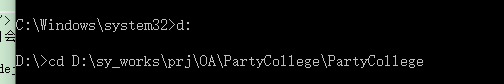
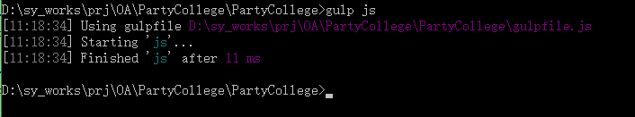
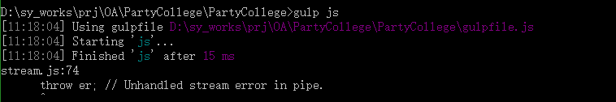
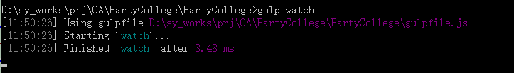

文件夹说明：
bower_components:存放所有第三方js插件。
template: angular-bootstrap存放自带指令调用的模板文件。
es5-shim:存放兼容低版本IE的插件。
Index.html 对外公开含banner的首页;
IndexBack.html 后台管理的首页;
IndexFront.html 前台用户登录后的主要页面;
dataBaseDesign:存放数据库设计文档
Scripts存放通用JS
app：app文件夹中为angularjs入口js文件
appmain.js 对应Html/Index.html的js启动文件。
appfront.js 对应Html/IndexFront.html的js启动文件。
appback.js 对应Html/IndexBack.html的js启动文件。
directives：存放所有指令文件
filters：存放过滤器文件
service：存放服务文件
back：管理后台所有的页面
directive：指令调用的页面
front：前台学员登录后的页面
main：对外公开的页面
public：公共的页面
请开发人员自行安装NodeJS，Gulp ，具体内容请查看项目根目录下的gulpfile.js
◆对于ag-ui指令缺少整个template目录和html文件，现已手动添加到bower_components/template,修改了ui-bootstrap.js，ui-bootstrap-tpls.js文件中的templateUrl,适用我们自己的项目。
◆IE8使用ag-ui的指令时，写法如下：
◆ng-repeat="user in users track by user.id" 因为每次替换数组都会导致 ng-repeat 为每个元素生成一个新 key, 所以根本没办法重用已有的 Dom 元素，那么我们可以使用下边的语法来避免这个问题。 这样 ng-repeat 就用将其缓存起来啦，当然可能你的数组元素没有一个标识属性，如果元素数量不多那么可以接受，不然还是建议你手动为其生成一个标识属性
◆Session.Abandon() 调用后Session_End 只知道掉了1个session,不知道掉的哪个sessionID.
◆
◆angularJS v1.2.29(最后一个兼容IE8的Angular)
◆angular-bootStrap v0.12.1 (为了配合1.2.X系类的Angular)
◆lodash v3.10.1
◆jqeury v1.9.1
◆JSON3 v3.3.2 (如果是IE8需要引用)
◆bindonce v0.3.3
◆因为项目会用Gulp的组件gulp-uglify来压缩JS
◆安装nodejs. 安装成功后，运行 npm -v,显示版本号。
◆安装gulp. 安装命令 npm install -g gulp
◆获取完最新的程序需要手动合并js代码，手动合并js操作如下
* cd到本地项目文件目录如图：

* 运行如下指令，出现如下结果正常，就可以开始编写js代码了

* 运行如下指令，出现如下异常，则需要检查项目目录下是否存在如下目录：dist/js，并且把该目录下的文件只读属性去掉。dist目录不能签入到项目里

◆编写js代码，自动合并js操作如下

◆说明：在项目目录 tfs外 dist/js 文件夹目录,该目录下的js文件取消只读。在修改templetes目录下的js文件前，运行 gulp js,js文件自动合并到dist/js下的controller.js 同时生成controller.min.js
所以请确保注入时需要如下这么写
◆angular.module('app',[]) .controller("myController",['$http','$scope','myService',function($http,$scope,myService){ }])
◆app-date指令，日期选择指令，接受三个参数 ng-model min-date max-date 注意后面2个参数请为JS日期对象